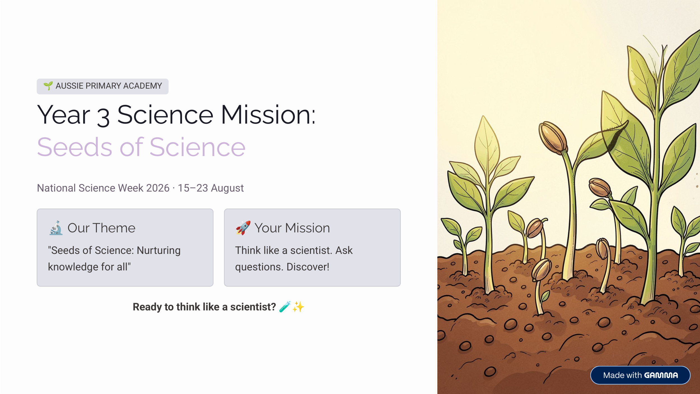

Year 3 · Science · National Science Week 2026 · Free Printable
Year 3 Science Mission: Seeds of Science
What could you discover if you investigated like a real scientist? Explore scientific thinking, life cycles, day & night shadows, heat & temperature, and complete a mini investigation.
Worksheet Preview

Learning Intention
Students will think like scientists by asking questions, making predictions, planning investigations, collecting evidence and explaining findings related to life cycles, shadows and heat transfer.
Australian Curriculum
Supports Year 3 Science Understanding (Biological Sciences, Earth & Space Sciences, Physical Sciences) and Science Inquiry Skills.
Teacher Notes
Ideal for National Science Week 2026. Can be used as a full mission pack or individual pages. Safety note included for any practical investigation (teacher supervision required).
Skills Practised
- Scientific thinking and the investigation process
- Comparing life cycles
- Understanding day, night and changing shadows
- Heat and temperature ideas
- Collecting simple data and explaining findings